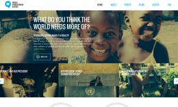

World Humanitarian Day: A new global campaign to turn words into aid
{kind=link}
The United Nations and its humanitarian partners have joined with global celebrities like Beyoncé and leading brands such as Gucci, Barclays Bank, Western Union and Intel to launch a campaign that seeks to turn people’s words into real support for communities affected by humanitarian crises.
“It is clear that the world needs more humanity,” said UN Humanitarian Chief Valerie Amos.
“This year, humanitarian agencies are trying to help more than 70 million people. Humanitarian needs are growing and that if we are to meet those rising needs we must do things differently. We have to keep engaging with new partners and supporters. This campaign is a chance to do that.”
In a video interview launched for the campaign, Beyoncé elaborates on what World Humanitarian Day means to her. She believes the world needs more empowered men and women and so will be championing #TheWorldNeedsMore #Strength.
Sponsor a word, make it a reality
‘The World Needs More__’ campaign enables leading international brands to sponsor a word they believe the world could use more of. Between 19 August and 24 September, people can “unlock” money pledged by these brands by sharing the sponsored words through social media, SMS or through the campaign website worldhumanitarianday.org.
Every time a sponsored word is shared, US$1 will be unlocked and go towards aid efforts in the world’s most underfunded humanitarian crises.
Kid President, the star of a successful series of YouTube videos produced by LA-based agency, SoulPancake is helping to spread the World Humanitarian Day message to new audiences by interviewing a number of global leaders and entertainers for the campaign.
"World Humanitarian Day is a really big deal,” he said. “It's cool that it's all over the world. I think all the people out there are like superheroes doing work to make things better."
“A new approach to philanthropy”
The campaign is a collaborative effort between the UN Foundation, the UN Development Programme (UNDP), OCHA, the International Council of Voluntary Agencies (ICVA), and advertising agency Leo Burnett New York.
“Our primary mission is connecting public and private organizations, high profile individuals and all people to the UN,” said Kathy Calvin, President and CEO of the UN Foundation. “We are extraordinarily proud to again help make this campaign a global event, raising vital funds and resources for humanitarian crises too often forgotten.”
“We believe ‘The World Needs More__’ offers a new approach to philanthropy, turning peoples’ words on social media into tangible assistance for people in need,” says Jay Benjamin, CCO of Leo Burnett New York.
“This new ‘marketplace for words’ harnesses the collective voice of many and allows corporations to give on behalf of their consumer. It’s a new approach to fundraising and corporate social responsibility that brings the world together around common beliefs.”
A global celebration
Events are being held in more than 50 cities around the world to celebrate World Humanitarian Day. In New York, families of those killed in the 2003 Iraq bombing will attend an event hosted by UN Secretary-General Ban Ki-moon, and in Rio de Janeiro, the Government of Brazil has arranged a series of events to celebrate the legacy of Sérgio Vieira de Mello who was killed in the Baghdad attack.
Elsewhere, events include an academic debate in Colombia, the awarding of an humanitarian prize in Madagascar, the hosting of fairs and photo exhibits in Mali and Pakistan, and even humanitarian-themed races, flash mobs and soccer tournaments in Panama, Thailand and Côte d’Ivoire respectively.
People can also support World Humanitarian Day through Chideo, a groundbreaking ‘donate-to-watch’ online platform that will enable celebrities and industry- and thought-leaders to raise money for charities by providing exclusive content that fans can then pay to watch. The site is being launched in Beta to mark World Humanitarian Day.